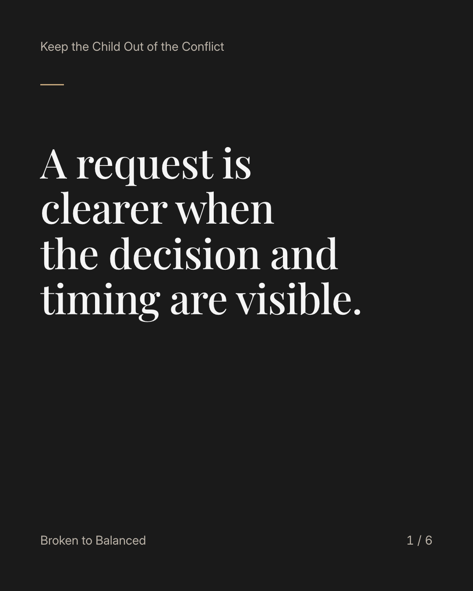
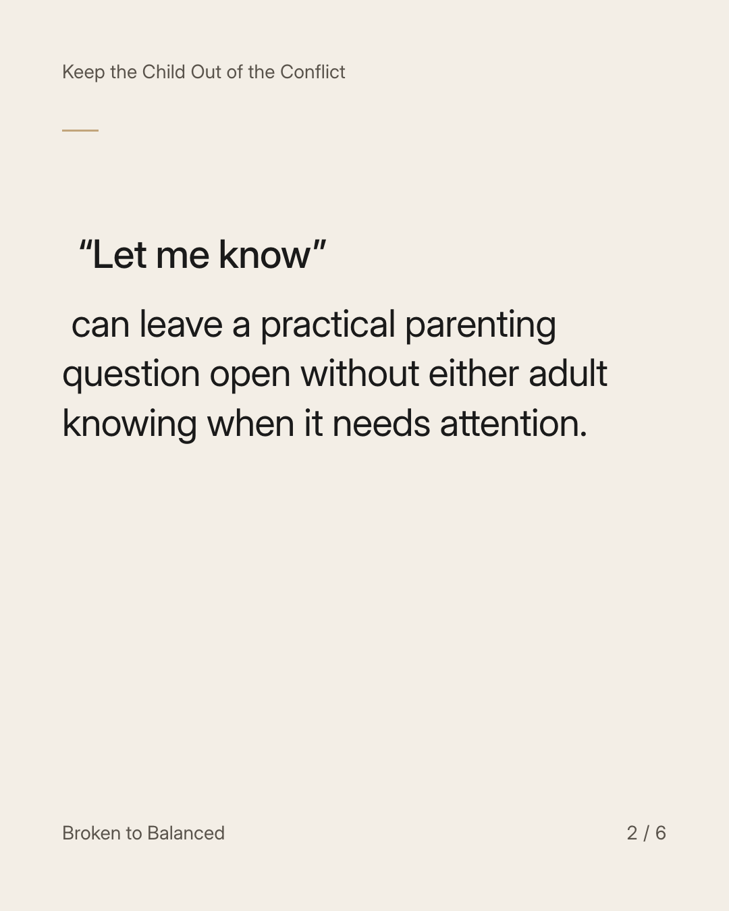
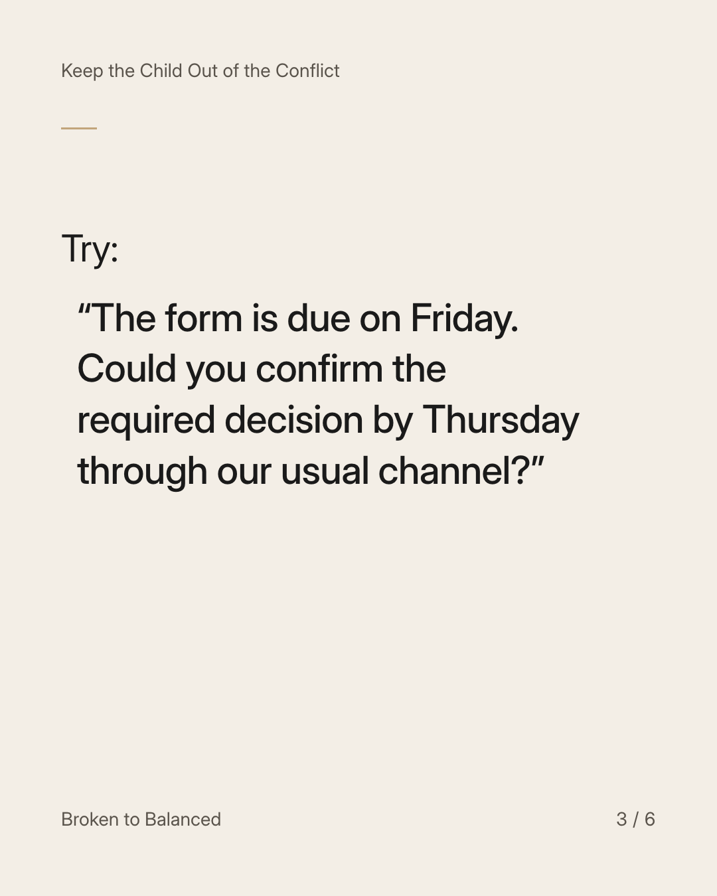
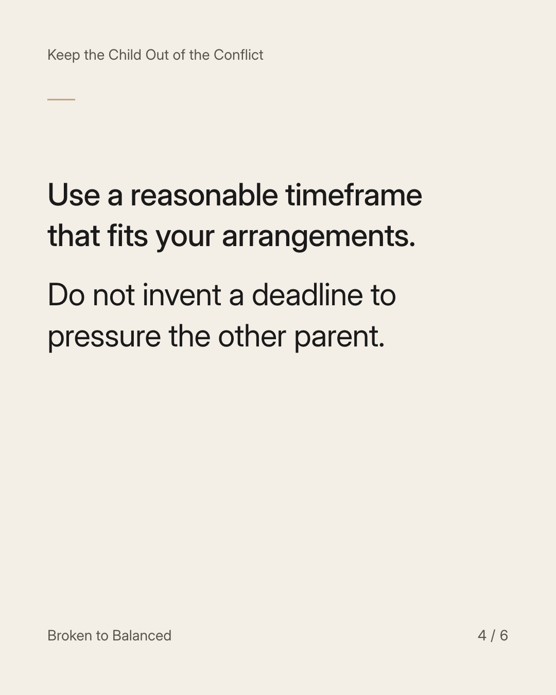
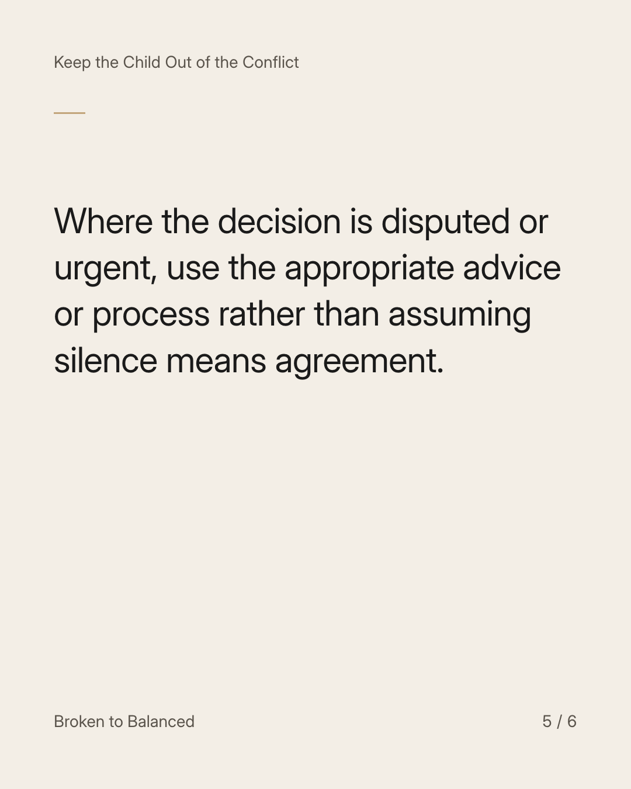
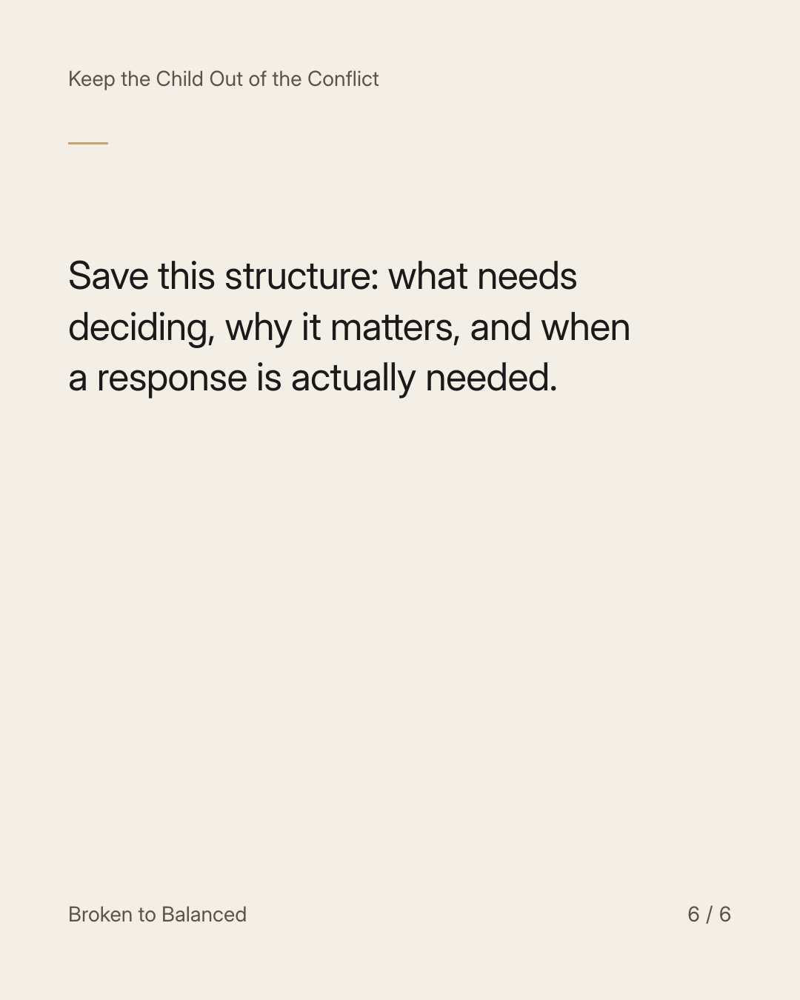

Exact text and accessibility text
A request is clearer when the decision and timing are visible.
Slide 1 of 6. A request is clearer when the decision and timing are visible.


Exact text and accessibility text
“Let me know” can leave a practical parenting question open without either adult knowing when it needs attention.
Slide 2 of 6. “Let me know” can leave a practical parenting question open without either adult knowing when it needs attention.


Exact text and accessibility text
Try: “The form is due on Friday. Could you confirm the required decision by Thursday through our usual channel?”
Slide 3 of 6. Try: “The form is due on Friday. Could you confirm the required decision by Thursday through our usual channel?”


Exact text and accessibility text
Use a reasonable timeframe that fits your arrangements. Do not invent a deadline to pressure the other parent.
Slide 4 of 6. Use a reasonable timeframe that fits your arrangements. Do not invent a deadline to pressure the other parent.


Exact text and accessibility text
Where the decision is disputed or urgent, use the appropriate advice or process rather than assuming silence means agreement.
Slide 5 of 6. Where the decision is disputed or urgent, use the appropriate advice or process rather than assuming silence means agreement.


Exact text and accessibility text
Save this structure: what needs deciding, why it matters, and when a response is actually needed.
Slide 6 of 6. Save this structure: what needs deciding, why it matters, and when a response is actually needed.
Exact caption
Plain-text fallback: select and copy the caption.